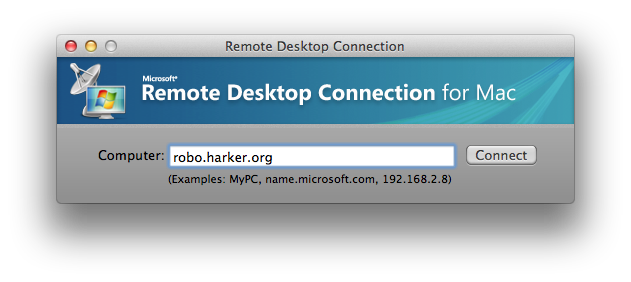
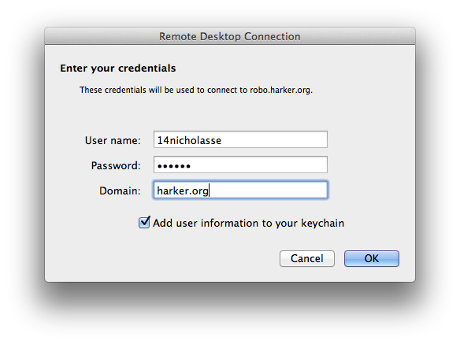
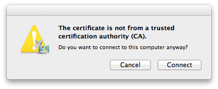
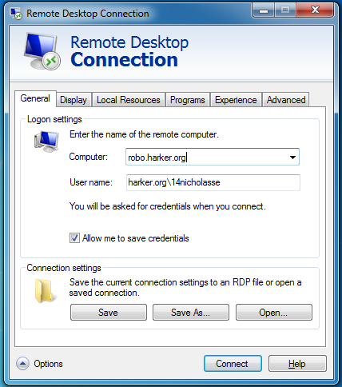
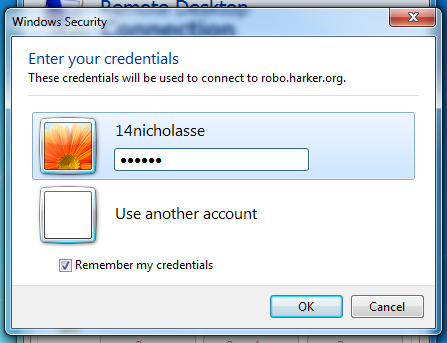
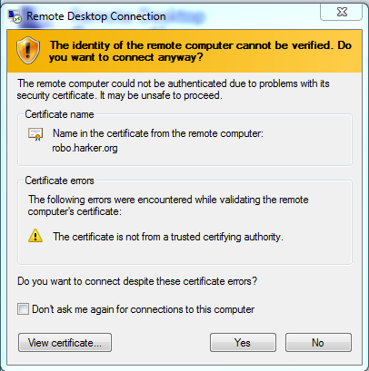

How to connec to the Terminal Server, used for CAD
MAC:
If you have Office installed, open Remote Desktop Connection, otherwise download and install from here.
enter robo.harker.org as the computer to connect to:
Enter you harker username and password, and harker.org for the domain

Hit connect when alerted that the certificate is not valid

You are now connected.
WINDOWS:
Search for "Remote Desktop Connection" in the start menu and open it.
enter robo.harker.org as the computer to connecto to, and harker.org\youharkerusername for the username

enter your harker password when prompted

Hit "yes" when asked if you still want to connect.

You are now connected.
Other (Linux iPhone, etc)
Use these credentials:
host: robo.harker.org
username: your harker username
password: harker password
domain: harker.org